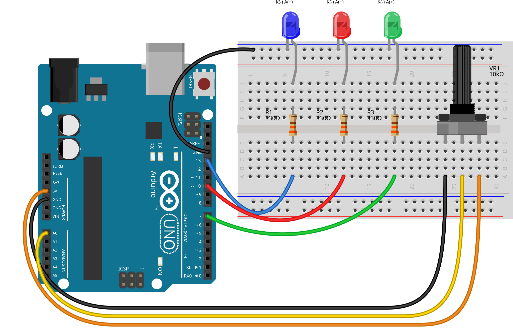

01출발점: 수업 시간의 Domino 3 LEDs
수업 코드는 TaskScheduler로 네 개의 작업을 같은 주기(1000ms)로 돌리고, 시작 시점만 0·100·200·600ms로 어긋나게 해서 도미노처럼 LED가 차례로 켜졌다가 함께 꺼지게 만든다.
const unsigned int TASK_PERIOD = 1000;
Task t1(TASK_PERIOD, TASK_FOREVER, &onLED1, &runner);
Task t2(TASK_PERIOD, TASK_FOREVER, &onLED2, &runner);
Task t3(TASK_PERIOD, TASK_FOREVER, &onLED3, &runner);
Task t4(TASK_PERIOD, TASK_FOREVER, &offLEDs, &runner);
t1.enable(); // 0 ms D13 ON
t2.enableDelayed(100); // 100 ms D10 ON
t3.enableDelayed(200); // 200 ms D7 ON
t4.enableDelayed(600); // 600 ms 모두 OFF과제
이 주기를 가변저항으로 500ms ~ 3000ms 사이에서 조정할 수 있도록 시스템을 설계한다.
여기서 주기는 D13이 켜진 순간부터 다음에 다시 켜지는 순간까지의 시간으로 정했다. 수업 코드에서는 이 값이 TASK_PERIOD다.
02설계: TASK_PERIOD만 바꾸면 안 되는 이유
가장 먼저 떠오르는 방법은 가변저항 값으로 TASK_PERIOD만 바꾸는 것이다. 그런데 시작 지연(100·200·600ms)이 고정되어 있으면 양 끝에서 문제가 생긴다. 수업 코드에서 숫자만 바꿔 PC에서 실제 TaskScheduler 라이브러리로 돌려 본 결과다.
주기 500ms: 도미노가 깨진다
끄는 시점(600ms)이 주기(500ms)보다 길어서, 끄기가 다음 주기 한가운데에 끼어든다.
| 시각 | 일어난 일 |
|---|---|
| 0 / 100 / 200 ms | D13 → D10 → D7 켜짐 |
| 600 ms | 모두 꺼짐 (2주기째 도중) |
| 700 ms | D7만 혼자 켜짐 |
| 1100 ms | D10이 켜지자마자 같은 순간 꺼짐 |
주기 3000ms: 도미노 속도는 그대로
600ms 동안 빠르게 도미노가 지나간 뒤 2400ms 동안 전부 꺼져 있다. 반복 간격만 길어질 뿐 도미노 자체는 느려지지 않는다.
| 시각 | 일어난 일 |
|---|---|
| 0 / 100 / 200 ms | D13 → D10 → D7 켜짐 |
| 600 ms | 모두 꺼짐 |
| 600 – 3000 ms | 2.4초 동안 아무것도 안 켜짐 |
해결: 시작 지연을 주기에 비례시킨다
수업 코드의 비율(1000ms 중 0·100·200·600ms)을 그대로 유지해서, 주기를 P라고 할 때 0, P/10, P/5, 3P/5에 각 동작을 하도록 바꿨다. 그러면 주기가 바뀌어도 도미노의 모양은 같고, 전체가 빨라지거나 느려지기만 한다.
| 주기 P | D13 ON | D10 ON (P/10) | D7 ON (P/5) | 모두 OFF (3P/5) |
|---|---|---|---|---|
| 500 ms (최소) | 0 | 50 | 100 | 300 |
| 1000 ms (수업 코드) | 0 | 100 | 200 | 600 |
| 1751 ms (가운데) | 0 | 175 | 350 | 1050 |
| 3000 ms (최대) | 0 | 300 | 600 | 1800 |
가변저항 값 → 주기
period = map(analogRead(A0), 0, 1023, 500, 3000)A0의 0–1023 값을 500–3000ms로 직선 변환한다. 끝까지 돌리면 정확히 500ms와 3000ms가 되고, 눈금 하나는 약 2.4ms다.
한 주기에 한 번만 읽는다
가변저항은 주기가 시작될 때(D13을 켤 때) 한 번만 읽는다. 도중에 돌려도 진행 중인 도미노는 원래 박자로 끝나고, 다음 주기부터 새 주기가 적용되어 패턴이 중간에 찢어지지 않는다.
03브라우저 시뮬레이션
가상 가변저항으로 돌려 보기
실제 하드웨어 촬영 영상이 아닙니다. 스케치와 같은 규칙으로 계산합니다.
막대 전체가 한 주기다. 붉은 구간(앞 60%) 동안 LED가 차례로 켜져 있고, 나머지 40%는 모두 꺼져 있다.
04회로와 연결도
LED 부분은 수업 회로 그대로다. D13·D10·D7에서 330Ω 저항을 거쳐 파랑·빨강·초록 LED의 애노드로 가고, 캐소드는 GND로 모은다. 여기에 가변저항 하나를 추가했다. 양 끝 다리는 5V와 GND, 가운데 다리(와이퍼)는 A0에 연결한다. 가변저항은 전압 분배기로 동작해서 A0에 0~5V가 걸리고, Arduino는 이를 0~1023으로 읽는다.



회로 기호로 연결 원리 보기
핀 연결
| Arduino | 연결 |
|---|---|
| D13 | 330 Ω → 파랑 LED 애노드(+) |
| D10 | 330 Ω → 빨강 LED 애노드(+) |
| D7 | 330 Ω → 초록 LED 애노드(+) |
| GND | LED 캐소드(−) 3개, 가변저항 한쪽 끝 |
| 5V | 가변저항 다른 쪽 끝 |
| A0 | 가변저항 가운데 다리(와이퍼) |
준비물
- Arduino Uno 1개
- 파랑·빨강·초록 LED 각 1개
- 330 Ω 저항 3개
- 가변저항(10 kΩ) 1개
- 브레드보드, 점퍼선
5V와 GND를 바꿔 꽂으면 돌리는 방향과 주기가 길어지는 방향만 반대로 바뀐다. Arduino 공식 AnalogInput 예제와 같은 가변저항 배선이다.
05스케치
수업 코드의 구조(TaskScheduler, 작업 4개)는 그대로 두고, 첫 번째 작업 t1이 매 주기의 시작을 맡도록 바꿨다. t1이 가변저항을 읽어 주기를 정하고, 나머지 세 작업은 그 주기에 맞춰 한 번씩만 예약한다.
#include <TaskScheduler.h>
const byte LED[] = {13, 10, 7};
const byte POT = A0;
Scheduler runner;
void startCycle();
void onLED2() { digitalWrite(LED[1], HIGH); }
void onLED3() { digitalWrite(LED[2], HIGH); }
void offLEDs() { for (byte pin : LED) digitalWrite(pin, LOW); }
Task t1(1000, TASK_FOREVER, &startCycle, &runner, true);
Task t2(TASK_IMMEDIATE, TASK_ONCE, &onLED2, &runner);
Task t3(TASK_IMMEDIATE, TASK_ONCE, &onLED3, &runner);
Task t4(TASK_IMMEDIATE, TASK_ONCE, &offLEDs, &runner);
void startCycle() {
unsigned long period = map(analogRead(POT), 0, 1023, 500, 3000);
t1.setInterval(period);
digitalWrite(LED[0], HIGH);
t2.restartDelayed(period / 10);
t3.restartDelayed(period / 5);
t4.restartDelayed(period * 3 / 5);
Serial.println(period);
}
void setup() {
Serial.begin(115200);
for (byte pin : LED) pinMode(pin, OUTPUT);
}
void loop() {
runner.execute();
}06동작 원리
1. t1이 주기를 정한다
startCycle()은 A0를 읽어 이번 주기 period를 계산하고 D13을 켠다. 수업 코드의 onLED1() 자리에 주기 계산이 더해진 것이다.
2. setInterval()로 다음 시작을 맞춘다
콜백 안에서 t1.setInterval(period)를 부르면 TaskScheduler는 지금부터 period 뒤에 t1을 다시 실행한다. 그래서 주기를 바꾼 그 순간부터 다음 주기의 길이가 정해진다.
3. 나머지 작업은 매 주기 한 번씩 예약한다
t2~t4는 TASK_ONCE(한 번 실행 후 꺼짐)로 만들고, 매 주기 restartDelayed()로 P/10, P/5, 3P/5 뒤에 다시 예약한다. 주기가 달라져도 세 작업이 항상 t1을 기준으로 정렬된다.
4. 수업 코드보다 짧아진 부분
핀 번호를 배열 하나로 묶어 pinMode와 끄기를 반복문 한 줄로 처리했다. Serial.println(period)는 시리얼 모니터에서 현재 주기를 확인하기 위한 줄이다.
07검증
Arduino Uno 컴파일
Arduino IDE의 arduino-cli(AVR 코어 1.8.8, TaskScheduler 4.1.0)로 Uno 대상 컴파일에 성공했다. 프로그램 저장 공간 5,048바이트(15%), 전역 변수 393바이트(19%)다.
실제 라이브러리로 타이밍 시뮬레이션
스케치와 TaskScheduler 4.1.0 소스를 PC에서 그대로 컴파일하고 millis()·analogRead()만 가짜로 바꿔, 1ms 단위로 LED가 바뀌는 시각을 모두 기록해 기대값과 비교했다.
| 시나리오 (A0 값) | 측정된 주기 | 결과 |
|---|---|---|
| 0 (최소) | 500 ms × 10주기 | 일치 |
| 1023 (최대) | 3000 ms × 5주기 | 일치 |
| 512 (가운데) | 1751 ms × 5주기 | 일치 |
| 204 | 998 ms × 6주기 | 일치 |
| 0 → 1200ms에 1023으로 돌림 | 500, 500, 500, 3000, 3000 | 일치 |
| 1023 → 4000ms에 0으로 돌림 | 3000, 3000, 500, 500, … | 일치 |
시뮬레이션 코드: sim.cpp, Arduino.h (가짜 시계·핀). 돌리는 중간에 값을 바꾼 두 시나리오에서, 진행 중이던 주기는 원래 길이로 끝나고 다음 주기부터 새 값이 적용되는 것을 확인했다. 검사가 정말 오류를 잡는지 보기 위해 일부러 틀린 스케치 두 개(시작 지연을 100·200·600ms로 고정한 것, setInterval()을 뺀 것)도 넣어 봤고, 둘 다 모든 시나리오에서 불일치로 나왔다.
실물 영상에서 잰 주기
아래 동작 영상을 30fps 프레임 단위로 읽어, LED 불빛이 켜지는 순간부터 다음에 다시 켜지는 순간까지의 시간을 쟀다. 가변저항을 양쪽 끝에 둔 구간을 골라 측정했고, 프레임 간격이 약 33ms이므로 그 정도 오차 안의 값이다.
| 영상 구간 | 가변저항 | 측정된 주기 | 켜져 있는 비율 |
|---|---|---|---|
| 1.4 – 3.9초 | 최소 쪽 끝 | 500 ms × 5주기 | 0.60 |
| 13.2 – 22.2초 | 최대 쪽 끝 | 3000 ms × 3주기 | 0.60 – 0.61 |
양 끝에서 과제 범위의 500ms와 3000ms가 그대로 나왔고, 한 주기 중 LED가 켜져 있는 비율 0.60은 설계한 끄기 시점 3P/5와 같다. 측정 코드: video_periods.py
08실제 동작 영상
실물 회로 동작 영상은 촬영 후 이 자리에 올린다.